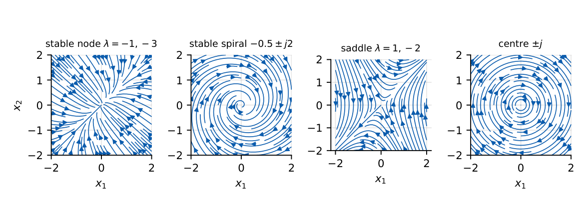

Solution of State Equations
State-transition matrix \(e^{At}\) by Laplace transform, diagonalisation or Cayley–Hamilton; its properties; zero-input and zero-state responses; \(x(t)\) for a given \(x(0)\). Very likely 2-mark question.
20.1 Core concept
For \(\dot x=Ax+Bu\), \(x(0)=x_0\):
Homogeneous (\(u=0\)): \(\dot x=Ax\Rightarrow x(t)=e^{At}x_0=\Phi(t)x_0\). Forced: multiply \(\dot x-Ax=Bu\) by \(e^{-At}\): \(\dfrac{d}{dt}(e^{-At}x)=e^{-At}Bu\); integrate from \(0\) to \(t\): \[ x(t)=\underbrace{\Phi(t)x(0)}_{\text{zero-input}}+\underbrace{\int_0^t\Phi(t-\tau)Bu(\tau)\,d\tau}_{\text{zero-state (convolution)}},\qquad y=Cx+Du. \] In the Laplace domain: \(X(s)=(sI-A)^{-1}x(0)+(sI-A)^{-1}BU(s)\), so \(\boxed{\Phi(t)=\mathcal L^{-1}\{(sI-A)^{-1}\}}\).
\(\Phi(0)=I\); \(\dot\Phi=A\Phi=\Phi A\); \(\Phi(t_1+t_2)=\Phi(t_1)\Phi(t_2)\); \(\Phi^{-1}(t)=\Phi(-t)\); \([\Phi(t)]^k=\Phi(kt)\).
\(e^{At}=I+At+\dfrac{A^2t^2}{2!}+\cdots\). Modes: \(e^{\lambda_it}\) where \(\lambda_i\) are the eigenvalues of \(A\).
20.2 Computing \(e^{At}\)
- Laplace: \(\Phi=\mathcal L^{-1}[(sI-A)^{-1}]\) (best for \(2\times2\)).
- Diagonalisation: if \(A=M\Lambda M^{-1}\) with \(M\) the eigenvector matrix, \(e^{At}=Me^{\Lambda t}M^{-1}\).
- Cayley–Hamilton: \(e^{At}=a_0(t)I+a_1(t)A+\cdots\); find \(a_i\) from \(e^{\lambda_kt}=a_0+a_1\lambda_k+\cdots\) for each eigenvalue.
- Series for nilpotent \(A\): \(A=\begin{bmatrix}0&1\\0&0\end{bmatrix}\Rightarrow e^{At}=I+At=\begin{bmatrix}1&t\\0&1\end{bmatrix}\).
\(A=\begin{bmatrix}0&1\\-2&-3\end{bmatrix}\): \((sI-A)^{-1}=\dfrac1{(s+1)(s+2)}\begin{bmatrix}s+3&1\\-2&s\end{bmatrix}\), so \[ \Phi(t)=\begin{bmatrix}2e^{-t}-e^{-2t}&e^{-t}-e^{-2t}\\-2e^{-t}+2e^{-2t}&-e^{-t}+2e^{-2t}\end{bmatrix}. \] Check: \(\Phi(0)=I\); \(\dot\Phi(0)=\begin{bmatrix}-2+2&-1+2\\2-4&1-4\end{bmatrix}=\begin{bmatrix}0&1\\-2&-3\end{bmatrix}=A\). With \(x(0)=[1\ 0]^T\): \(x(t)=[\,2e^{-t}-e^{-2t},\ -2e^{-t}+2e^{-2t}\,]^T\).
\(A=\begin{bmatrix}0&1\\-1&-2\end{bmatrix}\): \((sI-A)^{-1}=\dfrac1{(s+1)^2}\begin{bmatrix}s+2&1\\-1&s\end{bmatrix}\Rightarrow\Phi=e^{-t}\begin{bmatrix}1+t&t\\-t&1-t\end{bmatrix}\).
\(A=\begin{bmatrix}0&1\\-1&0\end{bmatrix}\): \(\Phi=\begin{bmatrix}\cos t&\sin t\\-\sin t&\cos t\end{bmatrix}\) (a rotation; eigenvalues \(\pm j\)).
\(A=\begin{bmatrix}0&1\\-2&-3\end{bmatrix}\), \(\lambda=-1,-2\): \(e^{At}=a_0I+a_1A\) with \(a_0-a_1=e^{-t}\), \(a_0-2a_1=e^{-2t}\): \(a_1=e^{-t}-e^{-2t}\), \(a_0=2e^{-t}-e^{-2t}\); the \((1,1)\) entry is \(a_0=2e^{-t}-e^{-2t}\) (matches).
\(B=\begin{bmatrix}0\\1\end{bmatrix}\), \(u=1\), \(x(0)=0\): \(X(s)=\dfrac{1}{s(s+1)(s+2)}\begin{bmatrix}1\\s\end{bmatrix}\), so \(x_1=\tfrac12-e^{-t}+\tfrac12e^{-2t}\), \(x_2=e^{-t}-e^{-2t}\) (which is \(\dot x_1\)). Steady state \(x_1\to\tfrac12\): \(-A^{-1}B=\begin{bmatrix}0.5\\0\end{bmatrix}\).
\(A=\mathrm{diag}(-1,-2)\), \(x(0)=[2\ 3]^T\): \(x(t)=[2e^{-t},\ 3e^{-2t}]^T\); \(x(1)=[0.736,\ 0.406]^T\).
For constant \(u\) the steady state solves \(0=Ax+Bu\Rightarrow x_{ss}=-A^{-1}Bu\) (stable \(A\)).

20.3 Physical interpretation
\(\Phi(t)\) maps the initial state into the state at time \(t\). Its columns are the free responses starting at each unit vector; its modes are the exponentials of the eigenvalues. Real negative eigenvalues give nodes, complex ones with negative real part give spirals, imaginary ones give sustained oscillation (centre), a positive real eigenvalue gives instability.
\(2\times2\) check: \(\Phi(0)=I\), \(\dot\Phi(0)=A\). \(\det\Phi(t)=e^{\mathrm{tr}(A)t}\). Stable iff every entry of \(\Phi\to0\). Zero-input poles vs transfer function poles coincide unless cancelled.
(i) \(e^{(A+B)t}\ne e^{At}e^{Bt}\) unless \(AB=BA\). (ii) \(e^{At}\) is not the elementwise exponential of \(A\). (iii) \(\Phi(t_1+t_2)=\Phi(t_1)\Phi(t_2)\) but \(\Phi(t)^{-1}=\Phi(-t)\), not \(1/\Phi\) elementwise. (iv) The zero-input response depends on \(x(0)\); \(G(s)\) describes only the zero-state part.
Q1. \(\Phi(0)=\) (A) \(0\) (B) \(A\) (C) \(I\) (D) \(e\).
Q2. \(\Phi^{-1}(t)=\) (A) \(\Phi(t)\) (B) \(\Phi(-t)\) (C) \(-\Phi(t)\) (D) \(\Phi^T(t)\).
Q3. \(\Phi(t)=\mathcal L^{-1}\{\) (A) \((sI+A)^{-1}\) (B) \((sI-A)^{-1}\) (C) \(sI-A\) (D) \(A(sI-A)\}\).
Answers: Q1 (C). Q2 (B). Q3 (B).
Q4. \(A=\begin{bmatrix}0&1\\-1&-2\end{bmatrix}\): \(\Phi(1)_{11}=\) (A) \(e^{-1}\) (B) \(2e^{-1}\) (C) \(0.5e^{-1}\) (D) \(3e^{-1}\).
Q5. \(A=\begin{bmatrix}-1&0\\0&-3\end{bmatrix}\), \(x(0)=[1\ 1]^T\): \(x(t)=\) (A) \([e^{-t},\ e^{-3t}]^T\) (B) \([e^{t},\ e^{3t}]^T\) (C) \([e^{-t},\ e^{-t}]^T\) (D) \([1,1]^T\).
Answers: Q4 (B): \(e^{-t}(1+t)\) at \(t=1\). Q5 (A).
Q6. With \(A=\begin{bmatrix}0&1\\-2&-3\end{bmatrix}\), \(\Phi_{12}(t)\) at \(t=1\) is (three decimals).
Q7. \(A=\begin{bmatrix}-2&0\\0&-5\end{bmatrix}\), \(\det\Phi(0.5)=\) (three decimals).
Answers: Q6: \(e^{-1}-e^{-2}=0.368-0.135=0.233\). Q7: \(e^{\mathrm{tr}(A)t}=e^{-3.5}=0.030\).
Q8. Which are true for \(\Phi(t)=e^{At}\)? (A) \(\Phi(t_1+t_2)=\Phi(t_1)\Phi(t_2)\) (B) \(\dot\Phi=A\Phi\) (C) \(\Phi(0)=0\) (D) \(\Phi(-t)=\Phi(t)^{-1}\).
Answers: Q8: (A), (B), (D).
Given \(\Phi(t)=\begin{bmatrix}e^{-2t}&0\\0&e^{-3t}\end{bmatrix}\), \(A=\dot\Phi(0)=\begin{bmatrix}-2&0\\0&-3\end{bmatrix}\). Given \(\Phi(t)=\begin{bmatrix}e^{-t}&te^{-t}\\0&e^{-t}\end{bmatrix}\): \(A=\dot\Phi(0)=\begin{bmatrix}-1&1\\0&-1\end{bmatrix}\) (Jordan block, repeated eigenvalue \(-1\)).
T1. Find \(e^{At}\) for \(A=\begin{bmatrix}0&1\\0&0\end{bmatrix}\).
T2. If \(\Phi(1)=\begin{bmatrix}0.5&0\\0&0.2\end{bmatrix}\), find \(\Phi(2)\) and \(\Phi(-1)\).
Answers: T1: \(\begin{bmatrix}1&t\\0&1\end{bmatrix}\). T2: \(\Phi(2)=\Phi(1)^2=\mathrm{diag}(0.25,0.04)\); \(\Phi(-1)=\Phi(1)^{-1}=\mathrm{diag}(2,5)\).
- \(x(t)=\Phi(t)x_0+\int_0^t\Phi(t-\tau)Bu(\tau)d\tau\); \(\Phi=\mathcal L^{-1}(sI-A)^{-1}\).
- \(\Phi(0)=I\), \(\dot\Phi(0)=A\), \(\Phi(t_1+t_2)=\Phi(t_1)\Phi(t_2)\), \(\Phi^{-1}(t)=\Phi(-t)\).
- Modes are \(e^{\lambda t}\); stable iff \(\mathrm{Re}\,\lambda_i<0\).
- Steady state for step: \(x_{ss}=-A^{-1}Bu\).